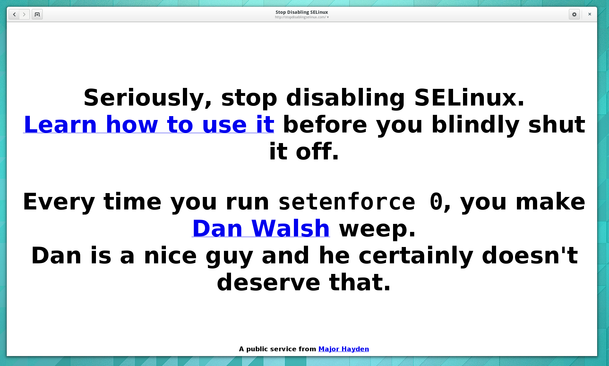
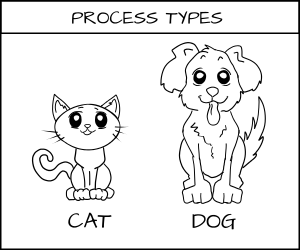
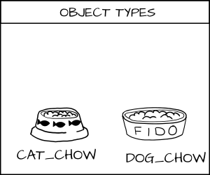
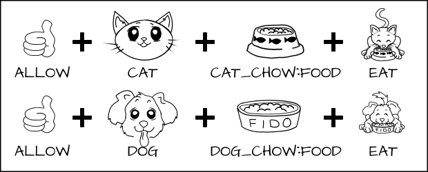
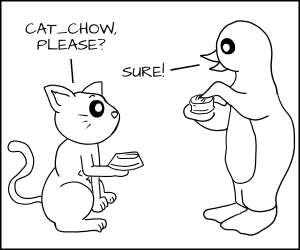
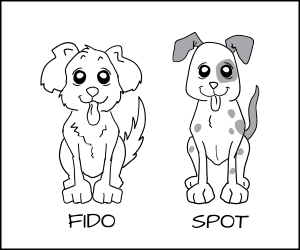
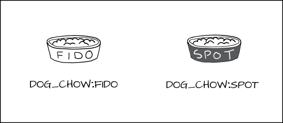
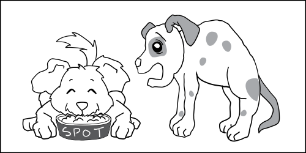
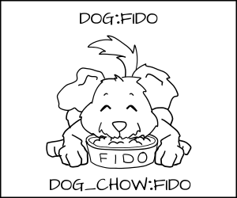
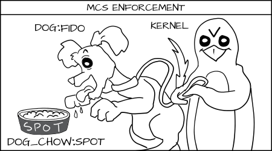

Containersdo not Contain
Drop Privileges as quickly as possible Run your services as non Root whenever possible Treat root within a container as if it is root outside of the container Don't run random containers on your system Only run containers from trusted parties
Not comprehensive like kvm Kernel file systems: /sys, /sys/fs, /proc/sys Cgroups, SELinux, /dev/mem, kernel modules
/sys /proc/sys /proc/sysrq-trigger /proc/irq /proc/bus
man capabilties
DESCRIPTION
For the purpose of performing permission checks, traditional UNIX
implementations distinguish two categories of processes: privileged
processes (whose effective user ID is 0, referred to as superuser or
root), and unprivileged processes (whose effective UID is nonzero).
Privileged processes bypass all kernel permission checks, while
unprivileged processes are subject to full permission checking based on
the process's credentials (usually: effective UID, effective GID, and
supplementary group list).
Starting with kernel 2.2, Linux divides the privileges traditionally
associated with superuser into distinct units, known as capabilities,
which can be independently enabled and disabled. Capabilities are a
per-thread attribute.
| CAP_SETPCAP | Modify process capabilities |
| CAP_SYS_MODULE | Insert/Remove kernel modules |
| CAP_SYS_RAWIO | Modify Kernel Memory |
| CAP_SYS_PACCT | Configure process accounting |
| CAP_SYS_NICE | Modify Priotity of processes |
| CAP_SYS_RESOURCE | Override Resource Limits |
| CAP_SYS_TIME | Modify the system clock |
| CAP_SYS_TTY_CONFIG | Configure tty devices |
| CAP_AUDIT_WRITE | Write the audit log |
| CAP_AUDIT_CONTROL | Configure Audit Subsystem |
| CAP_MAC_OVERRIDE | Ignore Kernel MAC Policy |
| CAP_MAC_ADMIN | Configure MAC Configuration |
| CAP_SYSLOG | Modify Kernel printk behaviour |
| CAP_NET_ADMIN | Configure the network |
| CAP_SYS_ADMIN | Catch all |
less /usr/include/linux/capability.h ... /* Allow configuration of the secure attention key */ /* Allow administration of the random device */ /* Allow examination and configuration of disk quotas */ /* Allow setting the domainname */ /* Allow setting the hostname */ /* Allow calling bdflush() */ /* Allow mount() and umount(), setting up new smb connection */ /* Allow some autofs root ioctls */ /* Allow nfsservctl */ /* Allow VM86_REQUEST_IRQ */ /* Allow to read/write pci config on alpha */ /* Allow irix_prctl on mips (setstacksize) */ /* Allow flushing all cache on m68k (sys_cacheflush) */ /* Allow removing semaphores */ /* Used instead of CAP_CHOWN to "chown" IPC message queues, semaphores and shared memory */ /* Allow locking/unlocking of shared memory segment */ /* Allow turning swap on/off */ /* Allow forged pids on socket credentials passing */ /* Allow setting readahead and flushing buffers on block devices */
/* Allow setting geometry in floppy driver */ /* Allow turning DMA on/off in xd driver */ /* Allow administration of md devices (mostly the above, but some extra ioctls) */ /* Allow tuning the ide driver */ /* Allow access to the nvram device */ /* Allow administration of apm_bios, serial and bttv (TV) device */ /* Allow manufacturer commands in isdn CAPI support driver */ /* Allow reading non-standardized portions of pci configuration space */ /* Allow DDI debug ioctl on sbpcd driver */ /* Allow setting up serial ports */ /* Allow sending raw qic-117 commands */ /* Allow enabling/disabling tagged queuing on SCSI controllers and sending arbitrary SCSI commands */ /* Allow setting encryption key on loopback filesystem */ /* Allow setting zone reclaim policy */
PID Name Space Network Name Space
Device Name Space
Controls which device nodes can be created within namespace Device nodes allow processes to configure kernel /dev/console,/dev/null,/dev/zero,/dev/full,/dev/tty*,/dev/urandom,/dev/random,/dev/fuse images mounted with nodev
User Name Space
Map non root user to root within container
Still experimental
How well will it scale
Can we use it to protect the host?
Can we protect one container from another?
No idea what that is?
SELinux is a LABELING system Every Process has a LABEL Every File, Directory, System object has a LABEL Policy rules control access between labeled processes and labeled objects The Kernel enforces the rules






Default Container file type.
svirt_sandbox_file_t
Multi Category Security Based on Multi Level Security (MLS)





Protects containers from each other. Container Processes can only read/write their own files. Docker Daemon picks out random MCS Label.
s0:c1,c2
Assigns MCS Label to all content Launches the container processes with same label Docker Daemon guarantees uniqueness
<h2>DEMO</H2>
docker run -v /var/lib/myapp:/var/lib/myapp:Z ... docker run -v /var/lib/myapp:/var/lib/myapp:z ...
User Name Space libseccomp --opt to allow you to tighten security --opt - Drop Capabilities --opt - Alternate SELinux Types Common Criteria